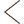
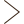

<article class="gr-wrapped-review-container">
  <section class="logo">
    <div class="logo-text">
      <div class="logo-text-inline">
        <h1 class="logo-bold">Good</h1>
        <h1 class="logo-thin">reads</h1>
      </div>
      <div class="logo-text-inline">Wrapped</div>
    </div>
  </section>
  <div class="current-stat-container" *ngIf="stats.length > 1">
    <grw-review-stat [stat]="stats[statIndex]"></grw-review-stat>
  </div>
  <div
    class="btn-arrow arrow-prev"
    *ngIf="statIndex > 0"
    (click)="statIndex = statIndex - 1"
  >
    
  </div>
  <div
    class="btn-arrow arrow-next"
    *ngIf="statIndex < stats.length - 1"
    (click)="statIndex = statIndex + 1"
  >
    
  </div>
</article>
